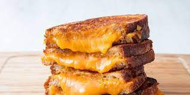

Home
Grilled Cheese

Description
Golden brown grilled cheese served with pickles.
Ingredients
- 5 tablespoons of butter
- 4 slices sourdough bread
- 2 cups shredded cheddar
Directions
- Spread 1 tablespoon butter on one side of each slice of bread. With butter side down, top each slice of bread with about ½ cup cheddar.
- In a skillet over medium heat, melt 1 tablespoon butter. Add two slices of bread, butter side down. Cook until bread is golden and cheese is starting to melt, about 2 minutes. Flip one piece of bread on top of the other and continue to cook until cheese is melty, about 30 seconds more.
- Repeat for the second sandwich, wiping skillet clean if necessary. Serve with pickles (if desired).